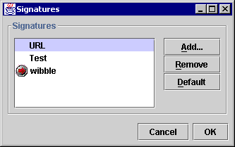

The Signatures Dialogue |
The signatures dialogue is accessed by invoking the Edit: Preferences menu item. This displays the Preferences Dialogue, in which you should select the Send Tab. In this panel, click on the Signatures... button.

N.b. Signatures are currently unsupported.
Displays a list of all the signatures available for message compositions in NewsAgent.
The default signature has a small icon to the left of its name.
Add adds a new signature to the list, using the following dialogue box:
[image]
Remove deletes the currently selected signature from the list of available signatures.
Sets the currently selected signature to be the default.
Saves or aborts changes.
Next Page: Send Panel